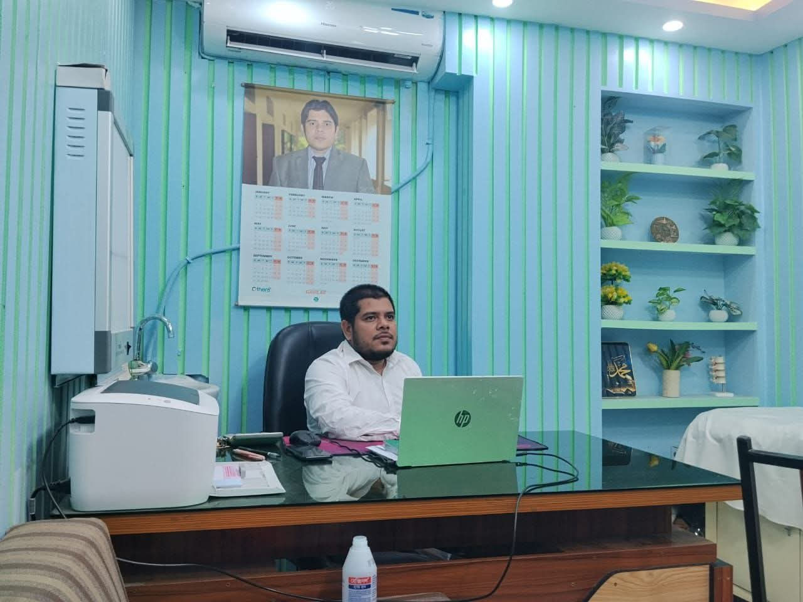
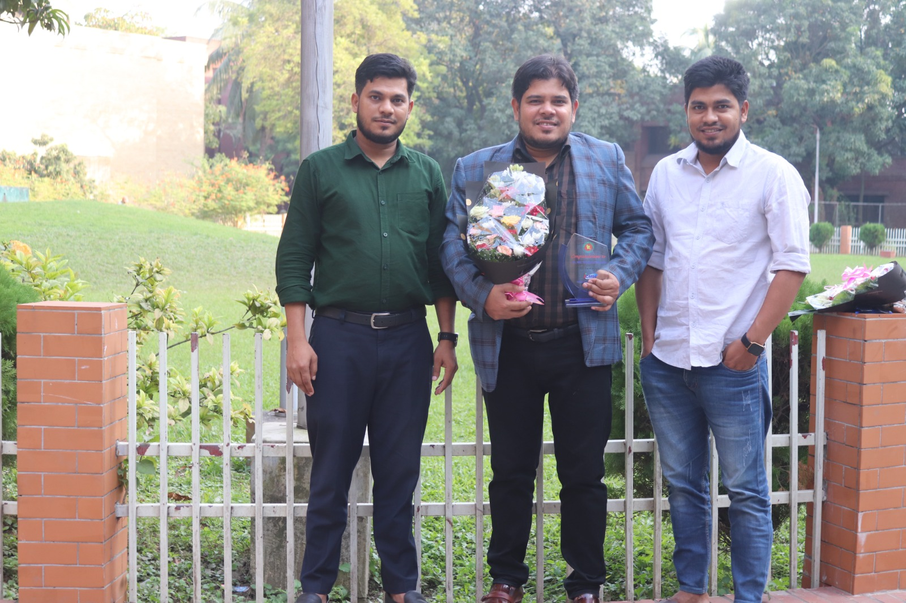
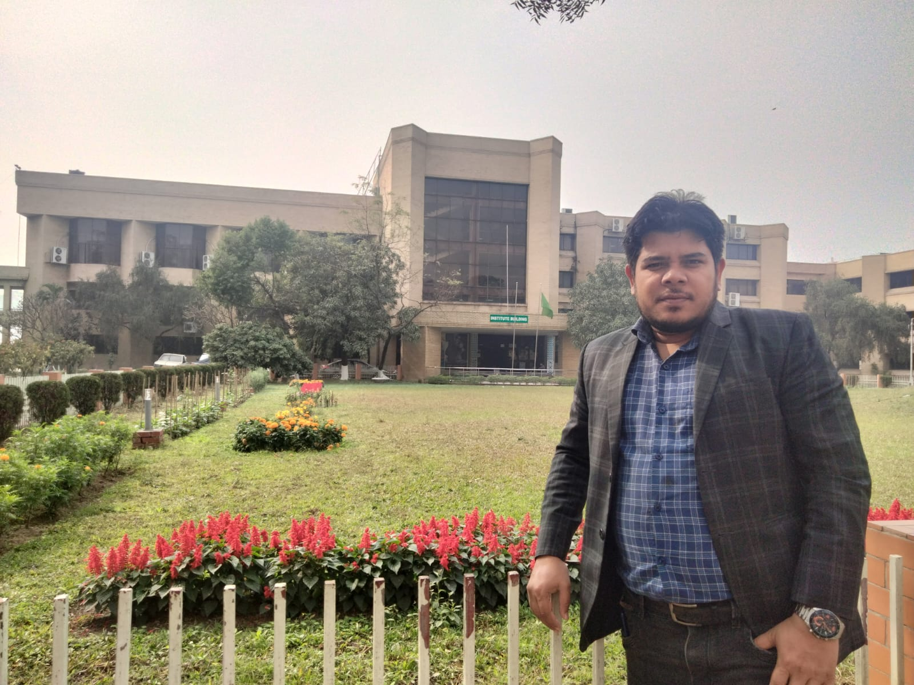
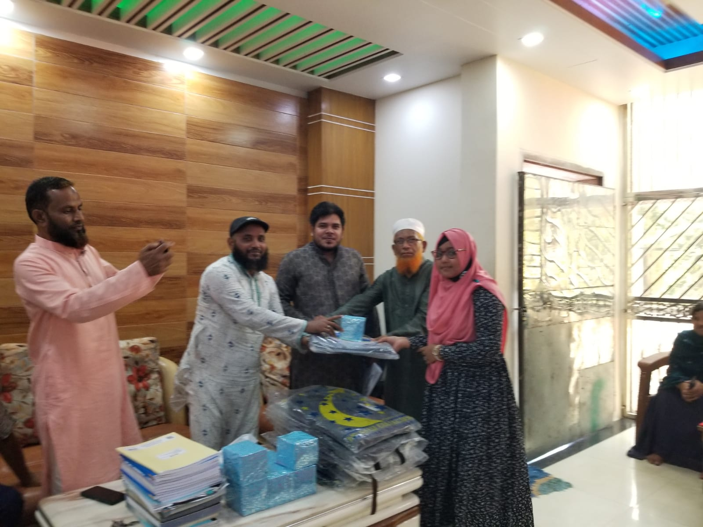

সহকারী অধ্যাপক (শিশুরোগ বিভাগ) — কুমিল্লা মেডিকেল কলেজ ও হাসপাতাল

ডা. মোঃ মোশারফ হোসেন ১ জুলাই তারিখে ঢাকার টঙ্গী-তে এক সম্ভ্রান্ত পরিবারে জন্মগ্রহণ করেন। শৈশব থেকেই তিনি শিক্ষার প্রতিটি স্তরে তাঁর অনন্য মেধা ও প্রতিভার স্বাক্ষর রেখেছেন। তিনি ঢাকা বিশ্ববিদ্যালয় অধিভুক্ত মেডিকেল কলেজ থেকে এমবিবিএস সম্পন্ন করার পর সরকারি বিসিএস (স্বাস্থ্য) ক্যাডারে যোগদান করেন এবং পরবর্তীতে দেশের শীর্ষস্থানীয় চিকিৎসা বিশ্ববিদ্যালয় বাংলাদেশ মেডিকেল বিশ্ববিদ্যালয় (পূর্বতন বিএসএমএমইউ) থেকে শিশু রোগে এমডি ডিগ্রি অর্জন করেন।
পেশাগত জীবনের বাইরে তিনি একজন অত্যন্ত সহানুভূতিশীল ও দানশীল মানুষ। তিনি বিশ্বাস করেন, চিকিৎসা সেবা কেবল একটি পেশা নয়, এটি মানবসেবার অন্যতম শ্রেষ্ঠ মাধ্যম। এ কারণে তিনি নিয়মিত বিভিন্ন দাতব্য প্রতিষ্ঠানে সাহায্য ও অনুদান দিয়ে থাকেন। বাবা-মার প্রতি তাঁর অসীম ভক্তি ও শ্রদ্ধা তাঁর জীবনের সকল সাফল্যের অন্যতম প্রধান চালিকাশক্তি।
অসহায় শিশুদের সুচিকিৎসায় আর্থিক সহায়তা এবং নিয়মিত দাতব্য কাজ করে থাকেন।
মা-বাবার প্রতি ভালোবাসা ও সুদৃঢ় পারিবারিক মূল্যবোধ বুকে ধারণ করেন।
বাংলাদেশ মেডিকেল বিশ্ববিদ্যালয় থেকে এমডি (শিশু রোগ) ও এফসিপিএস ডিগ্রিধারী।
বিএমডিসি রেজিঃ নং-এ-৫৯৮২৩ — একজন সরকার অনুমোদিত নিবন্ধিত চিকিৎসক।
নবজাতক থেকে শুরু করে কিশোর বয়স পর্যন্ত শিশুদের সকল প্রকার জটিল ও সাধারণ রোগের আধুনিক এবং যত্নশীল চিকিৎসা প্রদান করা হয়।
অপরিণত ও কম ওজনের নবজাতকের বিশেষ পরিচর্যা, জন্ডিস, শ্বাসকষ্ট এবং প্রাথমিক সকল সমস্যার উন্নত পরামর্শ ও জরুরি চিকিৎসা প্রদান।
বয়স অনুযায়ী শিশুর শারীরিক ও মানসিক বিকাশ ঠিকমতো হচ্ছে কি না তা পর্যবেক্ষণ করে পুষ্টিহীনতা দূর করার সঠিক খাদ্যতালিকা নির্ধারণ।
শিশুদের জটিল ও মারাত্মক সংক্রামক রোগ থেকে সুরক্ষিত রাখতে সঠিক সময়ে প্রয়োজনীয় ভ্যাকসিনেশন এবং সরকারি-বেসরকারি টিকাদান গাইডলাইন প্রদান।
প্রাথমিক বিদ্যালয় থেকে শুরু করে বাংলাদেশের স্বনামধন্য প্রতিষ্ঠানে পড়ালেখা ও উচ্চতর পেশাগত ডিগ্রি অর্জনের গৌরবময় ধারাবাহিকতা।
প্রাথমিক জীবন থেকেই ক্লাসের সেরা মেধা হিসেবে তাঁর যাত্রা শুরু হয় এই গৌরবময় বিদ্যাপীঠ থেকে।
মেধাবী ফলাফল অর্জনের মাধ্যমে তিনি মাধ্যমিকের গণ্ডি পার হন এবং বিজ্ঞান বিভাগে শ্রেষ্ঠত্ব বজায় রাখেন।
দেশের সেরা কলেজে পড়াশোনা সম্পন্ন করে তিনি তাঁর মেধার গভীরতা ও শৃঙ্খলার চমৎকার দৃষ্টান্ত স্থাপন করেন।
মেডিকেল শিক্ষাক্ষেত্রে অন্যতম স্বনামধন্য এই বিদ্যাপীঠ থেকে তিনি কৃতিত্বের সাথে এমবিবিএস ডিগ্রি অর্জন করেন।
এমবিবিএস পাসের পরেই অতি দ্রুত সময়ের মধ্যে সরকারি বিসিএস ক্যাডার হিসেবে স্বাস্থ্য অধিদপ্তরে যোগদান করেন।
দেশের শীর্ষস্থানীয় চিকিৎসা বিশ্ববিদ্যালয় বাংলাদেশ মেডিকেল বিশ্ববিদ্যালয় (পূর্বতন বিএসএমএমইউ) থেকে শিশু রোগে এমডি এবং এফসিপিএস ডিগ্রি অর্জন করেন।
শিশুরোগ বিভাগের সহকারী অধ্যাপক হিসেবে দায়িত্ব পালনের পাশাপাশি বিএমডিসি রেজিঃ নং-এ-৫৯৮২৩ এর অধীনে নিয়মিত রোগী দেখছেন।
শিশুর দৈনিক পুষ্টি ও সুস্বাস্থ্যের সুরক্ষায় ডা. মোশারফ হোসেনের অত্যন্ত কার্যকরী কিছু দিকনির্দেশনা ও জীবনযাত্রার নিয়মাবলি।
নবজাতক শিশুর সুস্থতা এবং শক্তিশালী রোগ প্রতিরোধ ক্ষমতা গড়ে তোলার জন্য প্রথম ছয় মাস পানির এক ফোঁটাও না দিয়ে কেবলমাত্র মায়ের বুকের দুধ খাওয়ানো উচিত।
বর্ষা কিংবা শীতের শুরুতে শিশুদের সহজেই নিউমোনিয়া বা অ্যাজমা আক্রমণ করতে পারে। শিশুকে কুসুম গরম পানিতে গোসল দিন এবং সুতি আরামদায়ক পোশাক পরিধান করান।
২ বছরের কম বয়সী শিশুদের কোনোভাবেই স্ক্রিন দেখানো উচিত নয়। বড় শিশুদের ক্ষেত্রে দৈনিক স্ক্রিন টাইম সর্বোচ্চ ১ ঘণ্টা করা এবং ঘুমানোর ১ ঘণ্টা আগে সব ডিভাইস বন্ধ রাখা জরুরি।
খাওয়ার আগে, টয়লেট ব্যবহারের পর এবং বাইরে থেকে আসার পর সাবান দিয়ে ২০ সেকেন্ড হাত ধোয়ার অভ্যাস করান। এটি ডায়রিয়া, টাইফয়েড ও জন্ডিসের ঝুঁকি ৮০% কমায়।
বাড়ন্ত শিশুদের জন্য ঘুম অত্যন্ত জরুরি। বয়সভেদে শিশুদের দৈনিক ১০ থেকে ১৪ ঘণ্টা ঘুম প্রয়োজন। রাতে তাড়াতাড়ি ঘুমানোর অভ্যাস শিশুর গ্রোথ হরমোনের নিঃসরণ স্বাভাবিক রাখে।
অতিরিক্ত মিষ্টি, চিপস, চকোলেট বা কোমল পানীয় শিশুদের স্থূলতা ও দাঁতের ক্ষয়ের প্রধান কারণ। এর বদলে প্রতিদিনের খাদ্যতালিকায় তাজা ফলমূল, ডিম ও দুধ রাখুন।
অনেক সময় শিশুরা খেলাধুলার ছলে পানি খেতে ভুলে যায়, যা কোষ্ঠকাঠিন্যের সৃষ্টি করে। শিশুকে সারাদিনে পর্যাপ্ত পরিমাণ নিরাপদ ও ফোটানো পানি পানের অভ্যাস করান।
শিশুকে ঘরে বন্দি না রেখে প্রতিদিন অন্তত ১ ঘণ্টা বাইরে বা খোলামেলা জায়গায় খেলতে দিন। এটি তাদের হাড় ও পেশী শক্তিশালী করার পাশাপাশি রোগ প্রতিরোধ ক্ষমতা বাড়ায়।
শিশুর প্রথম দাঁত ওঠার পর থেকেই সুতি কাপড় দিয়ে তা পরিষ্কার করুন। একটু বড় হলে দিনে দুইবার (সকালে ও রাতে ঘুমানোর আগে) ফ্লোরাইডযুক্ত টুথপেস্ট দিয়ে ব্রাশ করান।
শিশুর সামনে নেতিবাচক কথা বলা থেকে বিরত থাকুন। তাদের আত্মবিশ্বাস বাড়াতে ভালো কাজের জন্য প্রশংসা করুন এবং ভুল করলে বকা না দিয়ে আদর করে বুঝিয়ে বলুন।
শিশুরা যেকোনো জিনিস মুখে দেওয়ার চেষ্টা করে। তাই তাদের খেলার সামগ্রী, বিছানার চাদর এবং ঘরের মেঝে নিয়মিত জীবাণুমুক্ত রাখুন যেন ধুলোবালি ও অ্যালার্জি থেকে দূরে থাকে।
সামান্য জ্বর, সর্দি বা কাশির জন্য চিকিৎসকের প্রেসক্রিপশন ছাড়া শিশুকে কখনোই অ্যান্টিবায়োটিক খাওয়াবেন না। এটি শিশুর শরীরের রোগ প্রতিরোধ ক্ষমতার দীর্ঘমেয়াদী ক্ষতি করে।
রোগী দেখার সার্বিক সময়সূচি এবং চেম্বারগুলোর যোগাযোগের ঠিকানা নিরূপণ করুন।
হাসপাতাল রোড, বরুড়া, কুমিল্লা
কুমিল্লা
মহিদপুর, বরুড়া, কুমিল্লা
ডা. মোশারফ হোসেনের সমাজসেবামূলক মানসিকতার অংশ হিসেবে প্রতি শুক্রবার তাঁর নিজ বাসভবনে সুবিধাবঞ্চিত ও দরিদ্র ঘরের শিশুদের সম্পূর্ণ বিনামূল্যে দেখেন।
সন্তানদের সুস্থতার পর আনন্দিত ও কৃতজ্ঞ অভিভাবকদের চমৎকার কিছু বাস্তব অভিজ্ঞতা ও ভালোবাসার বাণী।
"আমার ছেলের দীর্ঘদিনের নিউমোনিয়ার সমস্যায় ডা. মোশারফ স্যারের চিকিৎসায় সে এখন আল্লাহর রহমতে সম্পূর্ণ সুস্থ। তিনি বাচ্চাদের চমৎকার ভালোবাসেন।"
"শুক্রবার স্যারের ফ্রি ক্লিনিকে গিয়েছিলাম। স্যার টাকা ছাড়াই অনেক যত্ন নিয়ে আমার মেয়েকে দেখেছেন এবং ফ্রিতে কিছু ওষুধও ব্যবস্থা করে দিয়েছেন।"
"মেডিকেল কলেজের সহকারী অধ্যাপক হওয়া সত্ত্বেও তাঁর আচরণ সাধারণ ও অমায়িক। শিশুদের সমস্যার কথা অত্যন্ত মনোযোগ দিয়ে শুনেন ও বুঝান।"
ডাক্তারের অ্যাপয়েন্টমেন্ট নেওয়া এবং শিশুর স্বাভাবিক প্রাথমিক চিকিৎসা সংক্রান্ত সাধারণ কিছু প্রশ্নোত্তর।
আপনার মোবাইল ফোন থেকে সরাসরি ০১৭৬০-৮৯৫৯৪১ নম্বরে কল দিয়ে ইসডো হাসপাতালের জন্য সিরিয়াল বুক করতে পারবেন অথবা সরাসরি চেম্বার কাউন্টারে যোগাযোগ করতে পারেন।
নবজাতকের শ্বাস-প্রশ্বাস যদি প্রতি মিনিটে ৬০ বারের বেশি হয় এবং বুকের খাঁচা দেবে যায়, তবে কালবিলম্ব না করে সাথে সাথে বিশেষজ্ঞ চিকিৎসকের কাছে বা জরুরি বিভাগে নিয়ে যেতে হবে।
হ্যাঁ, ডা. মোশারফ হোসেন প্রতি শুক্রবার নিয়মিতভাবে সকাল ৯টা থেকে দুপুর ১২টা পর্যন্ত তাঁর নিজ বাসভবনে বিনামূল্যে শিশুদের স্বাস্থ্যসেবা প্রদান করেন। জরুরি সরকারি দায়িত্ব বা বিশেষ কারণ ছাড়া এটি চালু থাকে।
হ্যাঁ। ডা. মোশারফ হোসেন ইসডো হাসপাতাল ও ডায়াগনস্টিক সেন্টার, বরুড়ায় প্রতিদিন দুপুর ৪.৩০ টা থেকে রাত ৮টা পর্যন্ত এবং ইবনে সিনা ডায়াগনস্টিক সেন্টার, কুমিল্লায় প্রতিদিন দুপুর ২টা থেকে বিকাল ৪টা পর্যন্ত রোগী দেখেন। অ্যাপয়েন্টমেন্টের জন্য ০১৭৬০-৮৯৫৯৪১ নম্বরে যোগাযোগ করুন।
নিচের ফ্রেমে যথাক্রমে gallery-1.jpg থেকে gallery-4.jpg নামে ছবি যোগ করলেই তা স্বয়ংক্রিয়ভাবে ভেসে উঠবে।

gallery-2.jpg
gallery-3.jpg
gallery-1.jpgযেকোনো সময় অ্যাপয়েন্টমেন্ট কিংবা প্রয়োজনীয় তথ্যের জন্য নিচের মাধ্যমগুলো ব্যবহার করুন।
মহিদপুর, বরুড়া, কুমিল্লা
হাসপাতাল রোড, বরুড়া, কুমিল্লা
ইবনে সিনা ডায়াগনস্টিক সেন্টার, কুমিল্লা